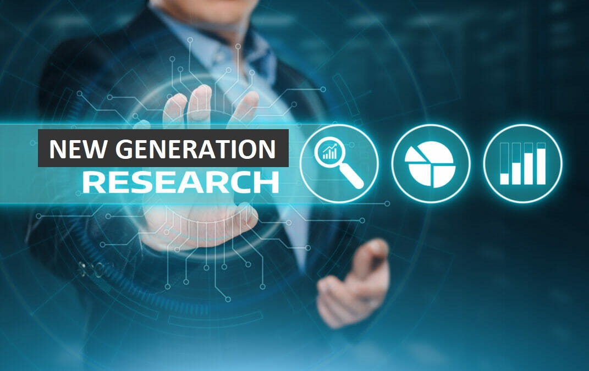

New Generation is a Market and Social Research Company. We deal with research, surveys, translations, interpretation and other activities in order to facilitate investments, development and partnership.
PRESENTATION
Experience In The Research Sector

As the team manager, I have been working with Research companies or organizations since 2005 and as a company New Generation was created in 2010. Our team members and especially the manager have worked in various field projects in DRC. We got involved in several Projects with several Research companies including Research Solutions, Research international, RGA, NDI, TNS, Youth Dynamix, ORB, Milward Brown, Geopoll, Ipsos, Soland associated consults, MRC and M&C Saatchi. With these various companies we have managed (as individual or as a company) to work on the following sector specialities: Public & Social Sector, Tech & Telecom, Health, Retail, Oil & Gas/C-Stores, Consumer, Financial Services, Automotive,...
Our Force As A Field Team

We have permanent team of 5 people that deal with all our projects in the central office and in all main cities we have teams that work with us on data collection in all our projects. For DRC we have a team of 30 interviewers in Kinshasa, 10 in Lubumbashi and 5 in each of the other cities (Mbujimayi, Kananga, Matadi, Kikwit, Mbandaka, Kisangani, Goma, and Kindu). We have 7 qualitative qualified interviewers based in Kinshasa and they travel to work in the other cities in case of need.
We also have 25 interviewers in Brazzaville and 1 contact person in each major town
We have more than 55 devices (Android tablets/TECNO L9 & SMART+) which enable us to do Mobile Data Collection.
Our staff and our interviewers speak French and at least 2 out of the 4 national languages; this enables us to carry out surveys in all DRC provinces using major/national languages (Lingala, Kikongo, Swahili, and Tshiluba) spoken in the 4 major tribes of the country in addition to French which is the official language.
All staff members have at least a bachelor degree in Law, Economics, Community Health, Business Communication, and etc…We also have registered doctors/physicians and nurses among our team members
All our interviewers are able to translate the questionnaire into the language the respondent feels comfortable with while the main questionnaire is in French; so even when the questions are in French our interviewers are able to interact with the respondents in their own languages. Still we use questionnaires that are already translated in the local languages when required by some clients/partners.
Why Us ?

Local knowledge- Being a local team gives us first hand knowledge of local culture and languages. This also increases the chances of our acceptability by locals
Our team is region based in DRC; we have teams and contact persons in all DRC provinces and Congo Republic regions
We have advantage as sons and daughters of the locals
Experience- We have collective hand on experience of several kinds of projects and we adapt easily to new things and new technology of information
We will treat you as partners and not client, i.e our offices and staff will be open for you to shape and use to serve your purpose
Contacts